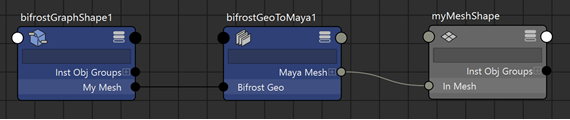

通过在 Bifrost 图表顶层的输出端口上单击鼠标右键，可以将网格输出从 Bifrost 转化为 Maya 网格。
在图表顶层的 output 节点上，在网格或网格数组的端口上单击鼠标右键。不支持仅连接到 terminal 节点的几何体。
选择“创建 Maya 网格”(Create Maya Mesh)。
bifrostGeoToMaya 节点添加并连接到图表输出。可以在 Maya 的“节点编辑器”(Node Editor)中查看这些连接。若要将 Bifrost 网格的 point_normal 值（如果存在）用作 Maya 网格的法线，请在 bifrostGeoToMaya 节点的属性中启用 Transfer Normals。
在 Properties 框中，指定要从 Bifrost 网格传递以作为 Maya 网格上的颜色集的特性。
float 和 double 值将作为 Alpha 颜色集进行传递。float3 和 double3 值将作为 RGB 颜色集进行传递。float4 和 double4 值将将作为 RGBA 颜色集进行传递。默认情况下，已输入 point_color。
point_color point_velocity point_age*（星号）。!（感叹号）。例如，要传递除 point_position 以外的所有特性： * !point_position